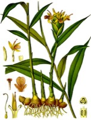

葉しょうがの生産量 都道府県ランキング
全7都道府県の順位と収穫量
葉しょうがの収穫量が全国で最も多いのは静岡県で、254 tです。全国（425 t）の60%を占めます。

| 順位 | 都道府県 | 収穫量 | 全国に占める割合 |
|---|---|---|---|
| 1位 | 静岡県 | 254 t | 60% |
| 2位 | 千葉県 | 140 t | 33% |
| 3位 | 神奈川県 | 25 t | 5.9% |
| 4位 | 群馬県 | 2 t | 0.5% |
| 5位 | 埼玉県 | 2 t | 0.5% |
| 6位 | 愛知県 | 2 t | 0.5% |
| 7位 | 福島県 | 1 t | 0.2% |
PR

葉しょうがの生産量の推移（令和2年産〜令和6年産）
全国の収穫量は、令和2年産の599 tから令和6年産の425 tへ、29%減りました。1位は入れ替わっています（令和2年産は静岡県、令和4年産は千葉県、令和6年産は静岡県）。
| 年 | 全国 | 1位 | 2位 | 3位 |
|---|---|---|---|---|
| 令和6年産 | 425 t | 静岡県254 t | 千葉県140 t | 神奈川県25 t |
| 令和4年産 | 778 t | 千葉県387 t | 静岡県276 t | 茨城県66 t |
| 令和2年産 | 599 t | 静岡県279 t | 千葉県156 t | 茨城県100 t |
この数字について
- 分類：ショウガ科
- 全国の収穫量：425 t
- この数字が表すもの：収穫量（収穫された重量）
- 調査：地域特産野菜生産状況調査 令和6年産
- 7県分を調査（調査していない県は順位に入りません）
葉しょうがの生産量について、よくある質問
- 葉しょうがの生産量が日本一の都道府県はどこですか？
- 静岡県です。地域特産野菜生産状況調査（令和6年産）で254 tでした。
- 葉しょうがの生産量ランキング2位・3位はどこですか？
- 2位は千葉県（140 t）、3位は神奈川県（25 t）です。
- 葉しょうがの生産量ランキング4位・5位はどこですか？
- 4位は群馬県（2 t）、5位は埼玉県（2 t）です。葉しょうがの全7県の順位は上の表のとおりです。
- 葉しょうがの全国の生産量はどれくらいですか？
- 425 t（令和6年産）です。